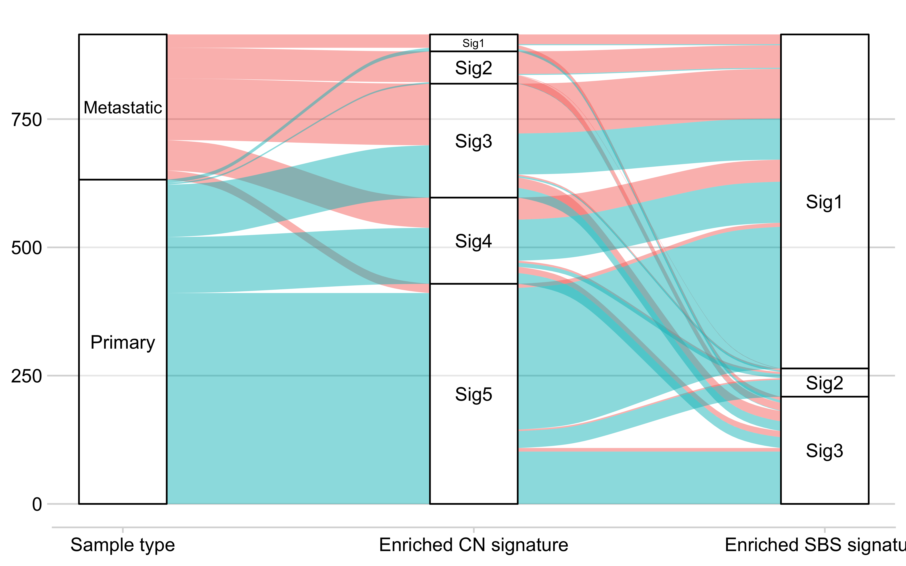
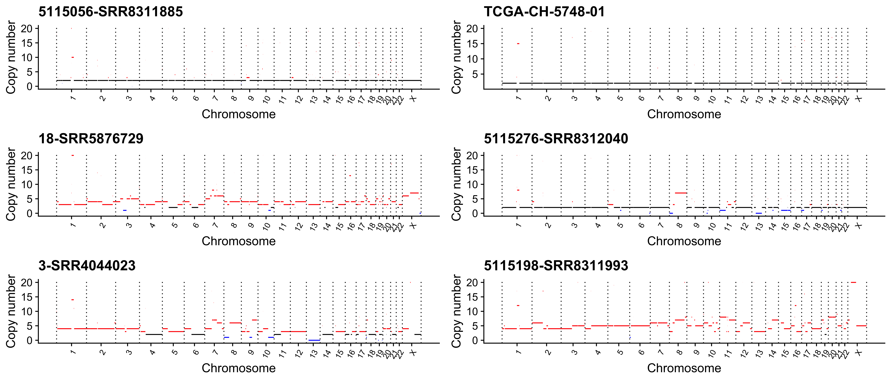
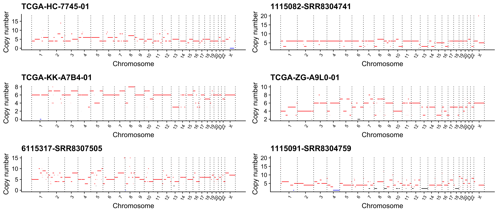
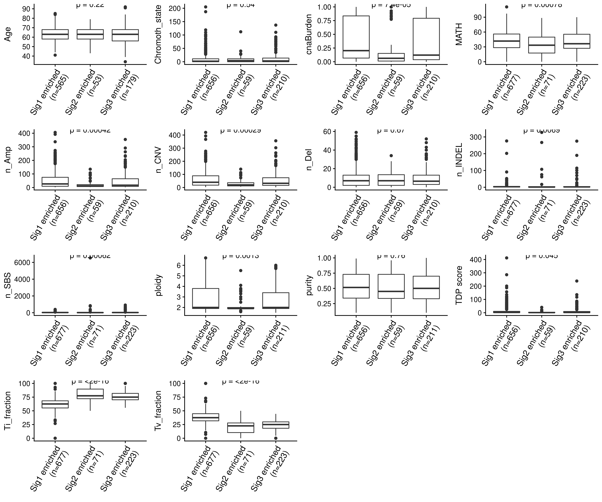

Prostate Cancer Variation Signature Analysis Report
Prostate Cancer Variation Signature Analysis Report
Contact Prof. Xue-Song Liu: liuxs@shanghaitech.edu.cn
This report is written to help user understand what and how we did in this project. Please read the formal manuscript TBD for more details.
This document is compiled from an Rmarkdown file which contains all code or description necessary to (auto-)reproduce the analysis for the accompanying project. Each section below describes a different component of the analysis and all numbers and figures are generated directly from the underlying data on compilation.
Data Preprocessing
Download Data
WES Data
Phenotype Data
Survival Data
Preprocess Data
Pipeline

Sequence Alignment
Copy Number Calling
Mutation Calling
Clean Data
Signature Identification
This part has been divided into 4 sections as the following, it will describe how to get the genomic variation (or instability) signatures from mutation profile (including copy number profile and single base substitution (SBS) profile).
- Tally variation records
- Estimate signature number
- Extract signatures
- Show signature profile and aetiology
All the processes have been implemented in R package sigminer.
Tally variation records
Methods
For SBS profile, same as previously reported (Alexandrov et al. 2013), for each sample, we firstly classified mutation records into six substitution subtypes: C>A, C>G, C>T, T>A, T>C, and T>G (all substitutions are referred to by the pyrimidine of the mutated Watson–Crick base pair). Further, each of the substitutions was examined by incorporating information on the bases immediately 5’ and 3’ to each mutated base generating 96 possible mutation types (6 types of substitution ∗ 4 types of 5’ base ∗ 4 types of 3’ base). Each of 96 mutation types is called component here.
For copy number profile, we firstly computed the genome-wide distributions of 8 fundamental copy number features for each sample:
- the breakpoint count per 10 Mb (BP10MB)
- the breakpoint count per chromosome arm (BPArm)
- the copy number of the segments (CN)
- the difference in copy number between adjacent segments (CNCP)
- the lengths of oscillating copy number segment chains (OsCN)
- the log10 based size of segments (SS)
- the minimal number of chromosome with 50% copy number variation (NC50)
- the burden of chromosome (BoChr)
These features were selected as hallmarks of previously reported genomic aberations like chromothripsis or to denote the distribution pattern of copy number events. The first 6 features has been used in Macintyre et al. (2018) to uncover the mutational processes in ovarian carcinoma.
Next, unlike Macintyre et al. (2018) applied mixture modeling to separate the first 6 copy number features distributions into mixtures of Poisson or Gaussian distributions, we directly classified 8 copy number features distributions into different components according to the comprehensive consideration of value range, abundence and biological significance. Most of the result are discrete values, and the others are range values.
The setting of 8 features with 80 components are shown as below.
When component is a discrete value (label is ‘point’), min=max
When component is a range value (label is ‘range’), the range is left open and right closed
Of note, the blank in
mincolumn is-Infand the blank inmaxcolumn isInf.[23]inBoChrrepresents chromosome X (chromosome Y is excluded).
Compare to the method from Macintyre et al. (2018), our method has several advantages:
- the computation is more efficient
- the meaning of component is easier to read and understand
- the new features NC50 and BoChr can be used to determine the distribution pattern of copy number events (global or local) and the contribution of each chromosome
- most importantly, the classification is fixed, so it is much easier to compare the signatures within/across tumor types, the results across different studies and the result signatures to reference signatures. In a word, our method constructs the standard to extract, study and compare signatures.
- our method is more extensible
I will talk more about No.1-4 in an individual section (TBD), the No.5 will be described in sigminer vignette(TBD).
We generated sample-by-component matrix using the methods above and treated the result as the input of nonnegative matrix decomposition (NMF) algorithm for extracting signatures.
Tally records
Copy number
Read absolute copy number profile as a CopyNumber object.
# Load packages -----------------------------------------------------------
suppressPackageStartupMessages(library(sigminer))
suppressPackageStartupMessages(library(tidyverse))
suppressPackageStartupMessages(library(NMF))# Set this per R session
options(sigminer.sex = "male", sigminer.copynumber.max = 20L)
# Generate CopyNumber object ----------------------------------------------
CNV.seqz <- read_copynumber("../data/CNV_from_sequenza.tsv",
genome_build = "hg38",
complement = FALSE, verbose = TRUE
)
# remove WCMC160-SRR3146971 with only one CNV
CNV.seqz <- subset(CNV.seqz, subset = !sample %in% "WCMC160-SRR3146971")
save(CNV.seqz, file = "../output/CNV.seqz.RData")Tally the alteration records.
SBS
Read SBS profile as a MAF object.
# Reading data ------------------------------------------------------------
Maf <- data.table::fread("/public/data/maf/all.maf")
# Remove all NA columns
Maf <- Maf[, which(unlist(lapply(Maf, function(x) !all(is.na(x))))), with = F]
Maf <- read_maf(Maf)
save(Maf, file = "../output/PRAD_TCGA_plus_dbGap_Maf.RData")The result MAF object can be used in any analysis provided by R package maftools (Mayakonda and Koeffler 2016).
Tally the SBS records.
Estimate signature number
R package NMF (Gaujoux and Seoighe 2010) is used for running NMF algorithm Factorization rank r in NMF defines the number of signatures used to approximate the target sample-by-component matrix. A common way of deciding on r is to try different values, compute some quality measure of the results, and choose the best value according to this quality criteria.
As suggested, performing 30-50 runs is considered sufficient to get a robust estimate of the r value. Here we perform 50 runs.
Copy number
Estimate the number of copy number signature from 2 to 12.
SBS
Estimate the number of SBS signature from 2 to 10.
# Remove the effect of hyper mutated samples (not removing hyper-mutated samples)
# The idead is adopted from SignatureAnalyzer package
nmf_matrix <- handle_hyper_mutation(Maf.tally$nmf_matrix)
EST.Maf <- sig_estimate(nmf_matrix,
range = 2:10, nrun = 50, cores = ncores, use_random = TRUE,
save_plots = FALSE,
verbose = TRUE
)
save(EST.Maf, file = "../output/EST.PRAD_TCGA_plus_dbGap_Maf.RData")
save(nmf_matrix, file = "../output/Maf_matrix.RData")Result
Let’s load the estimation results.
load(file = "../output/EST.seqz.W.all.RData")
load(file = "../output/EST.PRAD_TCGA_plus_dbGap_Maf.RData")The most common approach is to use the cophenetic correlation coefficient. I show the measure vs. signature number as below.

The best possible signature number value is the one at which the cophenetic correlation value on the y-axis drops significantly (Gaujoux and Seoighe 2010). Here we can take that the value 5 is the optimal signature number. For 3, it is small to produce the result with biological significance due to the hugo contribution of CNV in prostate cancer; for 8, it is a little big, so it may be not easy to understand the result considering currently we know few about the mechanism and consequence of copy number events.
p <- show_sig_number_survey(EST.seqz.W.all, right_y = NULL)
add_h_arrow(p, x = 5.1, y = 0.99, seg_len = 0.5)
Next we take a look at SBS.
p <- show_sig_number_survey(EST.Maf, right_y = NULL)
add_h_arrow(p, x = 3.1, y = 0.982, seg_len = 0.5)
For SBS, we select 3. We have the knowledge that 3 mutational signatures from TCGA prostate cancers are recorded in COSMIC database (COSMIC 1, 5, 6), and the cophenetic has a sharp decrease after 3 indicating that substantially less stability is achieved using more than 3 clusters.
Extract signatures
Now that we have determined the signature number, we then extract the signatures with 50 runs.
Copy number:
# Extract signatures ------------------------------------------------------
Sig.CNV.seqz.W <- sig_extract(CNV.seqz.tally.W$nmf_matrix, n_sig = 5, nrun = 50, cores = ncores)
save(Sig.CNV.seqz.W, file = "../output/Sig.CNV.seqz.W.RData")SBS:
Show signature profile and aetiology
Now that we have the extracted signatures, we can show the signature profile.
SBS signature profile
# I provide two style 'default' and 'cosmic' in sigminer
show_sig_profile(Sig.SNV, mode = "SBS", style = "cosmic", x_label_angle = 90, x_label_vjust = 0.5)
SBS signatures are displayed based on the observed component frequency of the human genome, i.e., representing the relative proportions of mutations generated by each signature based on the actual trinucleotide frequencies of the reference human genome.
The aetiologies of SBS signatures is more clear than those of copy number signatures. We can find the aetiologies of the 3 signatures above by computing their cosine similarity to COSMIC reference signatures.
We compare the 3 signature to COSMIC signature database v2 and v3.
sim_v2 <- get_sig_similarity(Sig.SNV, sig_db = "legacy")
#> -Comparing against COSMIC signatures
#> ------------------------------------
#> --Found Sig1 most similar to COSMIC_3
#> Aetiology: defects in DNA-DSB repair by HR [similarity: 0.844]
#> --Found Sig2 most similar to COSMIC_15
#> Aetiology: defective DNA mismatch repair [similarity: 0.943]
#> --Found Sig3 most similar to COSMIC_1
#> Aetiology: spontaneous deamination of 5-methylcytosine [similarity: 0.935]
#> ------------------------------------
#> Return result invisiblely.sim_v3 <- get_sig_similarity(Sig.SNV, sig_db = "SBS")
#> -Comparing against COSMIC signatures
#> ------------------------------------
#> --Found Sig1 most similar to SBS40
#> Aetiology: Unknown [similarity: 0.883]
#> --Found Sig2 most similar to SBS15
#> Aetiology: Defective DNA mismatch repair [similarity: 0.967]
#> --Found Sig3 most similar to SBS1
#> Aetiology: spontaneous or enzymatic deamination of 5-methylcytosine [similarity: 0.966]
#> ------------------------------------
#> Return result invisiblely.From the results above, basically we can confirm that aetiology of Sig2 is dMMR (defects in mismatch repair) and the aetiology of Sig3 is aging. The aetiology of Sig1 may be HRD (Defective homologous recombination-based DNA damage repair) or an unknown reason.
# I provide two style 'default' and 'cosmic' in sigminer
p <- show_sig_profile(Sig.SNV, mode = "SBS", style = "cosmic", x_label_angle = 90, x_label_vjust = 0.5)
add_labels(p,
x = 0.92, y = 0.3, y_end = 0.85, n_label = 3,
labels = rev(c("HRD or unknown", "dMMR", "Aging")), hjust = 1
)
The exposure of signature in each sample is plotted as the below.

Set a cutoff 2000 to remove some outliers.

The
Est_Countspanel shows the estimated SBS count.
We can clearly see that
- most of samples have very few SBS signature exposures
- Sig1 and Sig3 are the major resources
Copy number signature profile

Similar to SBS signatures, copy number signatures are displayed based on the observed component frequency of the human genome. Of note, considering the count of each feature is independent, the profile is row normalized by each feature, unlike Macintyre et al. (2018) did column normalized (this method is easy to mislead readers), so the bar height can be compared within/between feature
There is no reference database for copy number signatures, we cannot get aetiologies of the 5 signatures by similarity computation. By reading the description of previous reports (Macintyre et al. 2018; Yi and Ju 2018) and studying the signature profile carefully, we determine or limite the aetiologies of the 5 signatures with also the downstream analyses supported.
- Sig1 - Focal amplification due to failure of cell cyle control
- large copy number changes resulting high copy number states
- Sig2 - HRD;MMBIR;Tandem duplication through CDK12 inactivation
- match the pattern of MMBIR (microhomology mediated break-induced replication): many long OsCN with copy gains
- related to CDK12 mutation
- high number of breakpoints
- small segment size
- related to COSMIC 5 (v2) (from Macintyre et al. (2018))
- Sig3 - Whole-genome duplication (due to failure of cell cycle control)
- high segment copy number
- few OsCN
- global CNV distribution
- Sig4 - Chromothripsis
- 1 copy number deletions resulting considerable small OsCN
- large segment size
- Sig5 - BFB and copy number neutral like events including Chromoplexy, translocation, and etc. (these may be early driver events)
- few CNV with focal distribution
- associated with gene fusion
The exposure of signature in each sample is plotted as the below.

The
Est_Countspanel shows the estimated copy number segment count.
Show similarity matrix


Check the signature exposure
Signature exposure is the estimation of mutation records. Here we check this by correlation analysis.
Mutation
Observed total SBS mutations from data.
load(file = "../output/PRAD_TCGA_plus_dbGap_Maf.RData")
Maf_dt <- rbind(Maf@data, Maf@maf.silent)
Mut_dt <- Maf_dt[Variant_Type == "SNP", .(Total = .N), by = Tumor_Sample_Barcode]Estimated SBS mutations from signature exposure.
Merge the two data.table above.
Mut_merged_dt <- merge(Mut_dt, Mut_expo, by.x = "Tumor_Sample_Barcode", by.y = "sample")
# log10 the data
Mut_merged_dt[, `:=`(Total = log10(Total), Est = log10(Est))]
head(Mut_merged_dt)
#> Tumor_Sample_Barcode Total Est
#> 1: SRR2404024 1.6989700 1.6989700
#> 2: SRR2404067 0.9542425 0.9542425
#> 3: SRR2404095 1.9344985 1.9344984
#> 4: SRR2404185 1.7708520 1.7708520
#> 5: SRR2404230 1.8325089 1.8325089
#> 6: SRR2404278 1.9777236 1.9777236Now we can see their correlation.
ggpubr::ggscatter(Mut_merged_dt,
x = "Total", y = "Est", add = "reg.line",
xlab = "Log10 based total SBS counts (observed)",
ylab = "Log10 based total SBS counts (estimated)"
) +
ggpubr::stat_cor(label.x.npc = 0.5, label.y.npc = 0.8)
We can know that we did a perfect NMF for SBS data.
Copy number
Observed total segment counts from copy number data.
Estimated segment counts from signature exposure.
Merge the two data.table above.
CN_merged_dt <- merge(CN_dt, CN_expo, by = "sample")
head(CN_merged_dt)
#> sample Total Est
#> 1: 00-000450-SRR474658 58 61.71629
#> 2: 00-1165-SRR461844 51 51.71139
#> 3: 00-160-SRR471373 65 68.69707
#> 4: 00-1823-SRR471613 75 79.23348
#> 5: 01-1934-SRR471793 80 84.30801
#> 6: 01-2382-SRR471433 51 54.44634Now we can see their correlation.
ggpubr::ggscatter(CN_merged_dt,
x = "Total", y = "Est", add = "reg.line",
xlab = "Log10 based total segment counts (observed)",
ylab = "Log10 based total segment counts (estimated)"
) +
ggpubr::stat_cor(label.x.npc = 0.5, label.y.npc = 0.8, hjust = 1)
We can see that the estimation of copy number segment count fits observed data well. The residue can be further visualized by histgram.

Association Analysis
This part has been divided into 2 sections: data integration and association analysis.
Data integration
In this section, I integrate all genotype/phenotype data as a tidy data table used for downstream analyses.
Load packages and prepared data.
library(tidyverse)
library(sigminer)
library(maftools)
# Loading clinical related data -------------------------------------------
Info <- readRDS("../data/PRAD_CLINICAL.rds")
# Purity and ploidy info from facets
PurityInfo <- read_tsv("../data/PRAD_Purity_and_Ploidy_Sequenza.tsv")
# Processing CNV data -----------------------------------------------------
load("../output/CNV.seqz.RData")
load("../output/Sig.CNV.seqz.W.RData")
CNV <- CNV.seqz
Sig.CNV <- Sig.CNV.seqz.W
rm(Sig.CNV.seqz.W, CNV.seqz)After running NMF, we can get robust clusters from consensus matrix, more see ?NMF::predict.
I also create a function get_sig_exposure() to get the absolute/relative exposure of signatures.
Relative exposure is more useful for clustering and absolute exposure is more useful for association analysis.
# CNV
CNVGroupInfo <- get_groups(Sig.CNV, method = "consensus", match_consensus = TRUE)
#> => Obtaining clusters from the hierarchical clustering of the consensus matrix...
#> => Finding the dominant signature of each group...
#> => Generating a table of group and dominant signature:
#>
#> Sig1 Sig2 Sig3 Sig4 Sig5
#> 1 9 2 14 10 0
#> 2 0 60 0 3 0
#> 3 0 3 219 2 0
#> 4 0 0 0 170 0
#> 5 0 3 35 200 207
#> => Assigning a group to a signature with the maxium fraction (stored in 'map_table' attr)...
#> => Summarizing...
#> group #1: 35 samples with Sig3 enriched.
#> group #2: 63 samples with Sig2 enriched.
#> group #3: 224 samples with Sig3 enriched.
#> group #4: 170 samples with Sig4 enriched.
#> group #5: 445 samples with Sig5 enriched.
CNVInfo <- CNV@summary.per.sample
# Default is absolute exposure
CNVExposureInfo <- get_sig_exposure(Sig.CNV)We find that the group 1 is assigned to Sig3 due to sample with Sig3 dominant has the maximum fraction in group 1. However, group 1 is the only group with Sig1 enriched. So we modify this result.
Next, we process mutation data to get TMB, driver info, clusters, and etc (the detail has been described in R script under analysis/src/ of the repo).
# Processing mutation data ------------------------------------------------
load(file = "../output/PRAD_TCGA_plus_dbGap_Maf.RData")
load(file = "../output/Sig.PRAD_TCGA_plus_dbGap_Maf.RData")
TMBInfo <- Maf@variant.type.summary[, .(Tumor_Sample_Barcode, total, INS, DEL)]
TMBInfo$INDELs <- TMBInfo$INS + TMBInfo$DEL
TMBInfo$INS <- TMBInfo$DEL <- NULL
load(file = "../output/PRAD_driver_info.RData")
load(file = "../output/PRAD_heter_info.RData")
SNVGroupInfo <- get_groups(Sig.SNV, method = "consensus", match_consensus = TRUE)
#> => Obtaining clusters from the hierarchical clustering of the consensus matrix...
#> => Finding the dominant signature of each group...
#> => Generating a table of group and dominant signature:
#>
#> Sig1 Sig2 Sig3
#> 1 16 34 21
#> 2 30 0 193
#> 3 677 0 0
#> => Assigning a group to a signature with the maxium fraction (stored in 'map_table' attr)...
#> => Summarizing...
#> group #1: 71 samples with Sig2 enriched.
#> group #2: 223 samples with Sig3 enriched.
#> group #3: 677 samples with Sig1 enriched.
SNVExposureInfo <- get_sig_exposure(Sig.SNV)
# Processing gene and pathway mutation ------------------------------------
load(file = "../output/PRAD_gene_and_pathway_mutation.RData")Next, we keep keys of all data.frames are same and merge them into one.
# Merge data --------------------------------------------------------------
Info <- Info %>%
dplyr::mutate(
CNV_ID = dplyr::case_when(
!startsWith(tumor_Run, "TCGA") & !is.na(tumor_Run) ~ paste(subject_id, tumor_Run, sep = "-"),
startsWith(tumor_Run, "TCGA") & !is.na(tumor_Run) ~ tumor_Run,
TRUE ~ NA_character_
)
)
PurityInfo
#> # A tibble: 938 x 3
#> purity ploidy sample
#> <dbl> <dbl> <chr>
#> 1 0.59 1.9 00-000450-SRR474658
#> 2 0.55 1.9 00-1165-SRR461844
#> 3 0.75 1.9 00-160-SRR471373
#> 4 0.72 2 00-1823-SRR471613
#> 5 0.73 2 01-1934-SRR471793
#> 6 0.4 1.9 01-2382-SRR471433
#> 7 0.45 4.1 01-2492-SRR471733
#> 8 0.73 2 01-2554-SRR471673
#> 9 0.22 3.4 01-28-SRR471073
#> 10 0.35 2 02-1082-SRR472616
#> # … with 928 more rows
colnames(CNVGroupInfo) <- c("sample", "cnv_group", "cnv_weight", "cnv_enrich_sig")
CNVInfo
#> sample n_of_cnv n_of_amp n_of_del n_of_vchr cna_burden
#> 1: TCGA-HI-7169-01 2 2 0 0 0.000
#> 2: TCGA-CH-5743-01 3 2 1 1 0.000
#> 3: TCGA-EJ-7791-01 3 3 0 1 0.000
#> 4: TCGA-FC-A66V-01 3 3 0 1 0.000
#> 5: TCGA-J4-AATV-01 3 3 0 0 0.000
#> ---
#> 933: 5115609-SRR8311697 303 291 12 22 0.856
#> 934: 5115412-SRR8311627 356 354 2 22 0.948
#> 935: 5115406-SRR8312068 367 337 30 22 0.297
#> 936: 36-SRR5876749 393 392 1 22 0.926
#> 937: 5115615-SRR8311749 420 406 14 22 0.360
colnames(CNVExposureInfo) <- c("sample", paste0("CN_", colnames(CNVExposureInfo)[-1]))
colnames(TMBInfo) <- c("sample", "total_mutation", "INDELs")
TMBInfo[, sample := as.character(sample)][, sample := ifelse(startsWith(sample, "TCGA"),
substr(sample, 1, 15),
sample
)]
DriverDF[, sample := as.character(sample)][, sample := ifelse(startsWith(sample, "TCGA"),
substr(sample, 1, 15),
sample
)]
colnames(SNVGroupInfo) <- c("sample", "snv_group", "snv_weight", "snv_enrich_sig")
SNVGroupInfo[, sample := as.character(sample)][, sample := ifelse(startsWith(sample, "TCGA"),
substr(sample, 1, 15),
sample
)]
colnames(SNVExposureInfo) <- c("sample", paste0("SBS_", colnames(SNVExposureInfo)[-1]))
SNVExposureInfo[, sample := as.character(sample)][, sample := ifelse(startsWith(sample, "TCGA"),
substr(sample, 1, 15),
sample
)]
colnames(TitvInfo) <- c("sample", "Ti_fraction", "Tv_fraction")
TitvInfo[, sample := as.character(sample)][, sample := ifelse(startsWith(sample, "TCGA"),
substr(sample, 1, 15),
sample
)]
colnames(MathDF) <- c("sample", "MATH")
MathDF[, sample := as.character(sample)][, sample := ifelse(startsWith(sample, "TCGA"),
substr(sample, 1, 15),
sample
)]
colnames(ClusterDF) <- c("sample", "cluster")
ClusterDF[, sample := as.character(sample)][, sample := ifelse(startsWith(sample, "TCGA"),
substr(sample, 1, 15),
sample
)]
data.table::setDT(summary_mutation)
data.table::setDT(summary_pathway)
colnames(summary_mutation)[1] <- "sample"
colnames(summary_pathway)[1] <- "sample"
summary_mutation[, sample := as.character(sample)][, sample := ifelse(startsWith(sample, "TCGA"),
substr(sample, 1, 15),
sample
)]
summary_pathway[, sample := as.character(sample)][, sample := ifelse(startsWith(sample, "TCGA"),
substr(sample, 1, 15),
sample
)]
MergeInfo <- Info %>%
left_join(CNVInfo, by = c("CNV_ID" = "sample")) %>%
left_join(CNVGroupInfo, by = c("CNV_ID" = "sample")) %>%
left_join(CNVExposureInfo, by = c("CNV_ID" = "sample")) %>%
left_join(PurityInfo, by = c("CNV_ID" = "sample")) %>%
left_join(summary_mutation, by = c("tumor_Run" = "sample")) %>%
left_join(summary_pathway, by = c("tumor_Run" = "sample")) %>%
left_join(TMBInfo, by = c("tumor_Run" = "sample")) %>%
left_join(DriverDF, by = c("tumor_Run" = "sample")) %>%
dplyr::mutate(
n_driver = ifelse(!is.na(n_driver), n_driver, 0)
) %>%
left_join(TitvInfo, by = c("tumor_Run" = "sample")) %>%
left_join(MathDF, by = c("tumor_Run" = "sample")) %>%
left_join(ClusterDF, by = c("tumor_Run" = "sample")) %>%
left_join(SNVGroupInfo, by = c("tumor_Run" = "sample")) %>%
left_join(SNVExposureInfo, by = c("tumor_Run" = "sample")) %>%
mutate(
Stage = factor(Stage, ordered = TRUE),
Fusion = ifelse(Fusion == "Negative", "No", "Yes"),
sample_type = ifelse(sample_type == "Unknown", NA_character_, sample_type),
HasFusion = Fusion,
HasFusion = ifelse(HasFusion == "Yes", TRUE, FALSE),
IsMetastatic = ifelse(sample_type == "Metastatic", TRUE, FALSE)
)
summary(MergeInfo)
#> Study subject_id sample_type tumor_body_site
#> tumor_Run normal_Run PatientID Age
#> Stage PSA GleasonScore Fusion
#> CNV_ID n_of_cnv n_of_amp n_of_del
#> n_of_vchr cna_burden cnv_group cnv_weight
#> cnv_enrich_sig CN_Sig1 CN_Sig2 CN_Sig3
#> CN_Sig4 CN_Sig5 purity ploidy
#> ACVR2A APBB2 APC AR
#> ARNT ATM ATXN2 BIN1
#> CDKN1B CPLX4 CPNE3 DEPDC1B
#> ETV3 FOXA1 IL6ST KDM6A
#> KRT85 LCE2D LCE4A NUDT22
#> PGLS PIK3R1 PRPF19 PTEN
#> RB1 RNF43 RTKN SKA3
#> SPOP SYPL1 TMPRSS2 TP53
#> USP28 ZNF17 CDK12 ZMYM3
#> CTNNB1 ZFHX3 ERF HLA-DRB1
#> DHX30 CASZ1 NCOR1 COL11A1
#> SLC45A3 NKX3-1 JAK1 Cell_Cycle
#> Hippo MYC NOTCH NRF2
#> PI3K TGF-Beta RTK-RAS TP53_pathway
#> WNT HR_pathway total_mutation INDELs
#> n_driver Ti_fraction Tv_fraction MATH
#> cluster snv_group snv_weight snv_enrich_sig
#> SBS_Sig1 SBS_Sig2 SBS_Sig3 HasFusion
#> IsMetastatic
#> [ reached getOption("max.print") -- omitted 7 rows ]
saveRDS(MergeInfo, file = "../output/PRAD_Merge_Info_CNV_from_sequenza.RData")Association analysis
Now we do association analysis between signatures (via exposure) and genotypes/phenotypes.
Prepare
Load packages.
Load the data.
Set the coloumns used for analysis.
cols_to_sigs.seqz <- c(paste0("CN_Sig", 1:5), paste0("SBS_Sig", 1:3))
# Driver genes identified by MutSig software
cols_to_mutated_genes <- colnames(df.seqz)[29:75]
# 10 oncogenic pathways in TCGA 2018 papers + HR pathway
cols_to_mutated_pathways <- colnames(df.seqz)[76:86]
# Exclude PSA
cols_to_features <- c(
"IsMetastatic", "HasFusion",
"Age", "Stage", "GleasonScore",
"total_mutation", "INDELs", "n_driver", "Ti_fraction", "Tv_fraction",
"n_of_cnv", "n_of_amp", "n_of_del", "n_of_vchr", "cna_burden",
"MATH", "cluster", "purity", "ploidy"
)
feature_type <- c(rep("ca", 2), rep("co", 17))Signatures & features
Analyze the association between signatures and features.
tidy_data.seqz.feature <- get_sig_feature_association(df.seqz,
cols_to_sigs = cols_to_sigs.seqz,
cols_to_features = cols_to_features,
method_co = "pearson",
type = feature_type, verbose = TRUE
) %>%
get_tidy_association(p_adjust = TRUE) # adjust p value with FDR
#> -> Detecting and transforming possibly ordinal variables...
#> -> Calculating correlations for continuous variables using pearson...
#> -> Calculating correlations for categorical variables using wilcox.test...
#> --> building test models, be patient...
#> --> done
#> --> obtaining model results...
#> --> done
#> --> collecting data...
#> --> done
#> -> DoneAssociation of signature exposures with other features was performed using one of two procedures: for a continuous association variable (including ordinal variable), pearson correaltion was performed; for a binary association variable, samples were divided into two groups and Mann-Whitney U-test was performed to test for differences in signature exposure medians between the two groups.
Show the result.

All shown circles are statistically significant results (FDR < 0.05). A feature will be chopped off from the plot if has no correlation with any signatures. Same for the similar plots below.
The result table:
Signatures & mutated genes
Analyze the association between signatures and mutated genes (only driver genes identified by MutSig).
tidy_data.seqz.gene <- get_sig_feature_association(df.seqz,
cols_to_sigs = cols_to_sigs.seqz,
cols_to_features = cols_to_mutated_genes,
type = "ca", verbose = TRUE
) %>%
get_tidy_association(p_adjust = TRUE)
#> -> Detecting and transforming possibly ordinal variables...
#> -> Calculating correlations for categorical variables using wilcox.test...
#> --> building test models, be patient...
#> --> done
#> --> obtaining model results...
#> --> done
#> --> collecting data...
#> --> done
#> -> Donesum_genes <- tidy_data.seqz.gene %>%
dplyr::filter(p <= 0.05) %>%
dplyr::summarise(
min = min(measure, na.rm = T),
max = max(measure, na.rm = T),
sum = list(summary(measure))
)
sum_genes$sum
#> [[1]]
#> Min. 1st Qu. Median Mean 3rd Qu. Max.
#> -14.00 6.00 22.45 98.94 85.38 762.00# myPalette <- colorRampPalette(rev(brewer.pal(11, "RdYlBu")))
# sc <- scale_colour_gradientn(colours = myPalette(100), limits=c(-20, 600))
sc <- scale_colour_gradientn(
colors = c("lightblue", "white", "orange", "red"),
values = scales::rescale(c(
sum_genes$min,
0,
20,
sum_genes$max
))
)
show_sig_feature_corrplot(tidy_data.seqz.gene,
ylab = "Mutated genes",
ca_gradient_colors = sc,
p_val = 0.05
) # p_val needs to keep in line with the sum_genes p <= 0.05
The result table:
Signatures & mutated pathways
Analyze the association between signatures and mutated pathways.
tidy_data.seqz.pathways <- get_sig_feature_association(df.seqz,
cols_to_sigs = cols_to_sigs.seqz,
cols_to_features = cols_to_mutated_pathways,
type = "ca", verbose = TRUE
) %>%
get_tidy_association(p_adjust = TRUE)
#> -> Detecting and transforming possibly ordinal variables...
#> -> Calculating correlations for categorical variables using wilcox.test...
#> --> building test models, be patient...
#> --> done
#> --> obtaining model results...
#> --> done
#> --> collecting data...
#> --> done
#> -> Donesum_pathways <- tidy_data.seqz.pathways %>%
dplyr::filter(p <= 0.05) %>%
dplyr::summarise(
min = min(measure, na.rm = T),
max = max(measure, na.rm = T),
sum = list(summary(measure))
)
sum_pathways$sum
#> [[1]]
#> Min. 1st Qu. Median Mean 3rd Qu. Max.
#> -4.68 7.83 18.00 52.73 56.70 531.00sc <- scale_colour_gradientn(
colors = c("lightblue", "white", "orange", "red"),
values = scales::rescale(c(
sum_pathways$min,
0,
20,
sum_pathways$max
))
)
show_sig_feature_corrplot(tidy_data.seqz.pathways,
ylab = "Mutated pathways",
ca_gradient_colors = sc
)
The result table:
Correlation network
To determine the structure of relationship between signatures and features, we use continuous variables to do correlation network analysis.
f_dt <- df.seqz[, c(cols_to_sigs.seqz, cols_to_features[c(-1, -2)])] %>%
dplyr::mutate_if(is.ordered, as.numeric)library(corrr)
res.cor <- correlate(f_dt,
use = "pairwise.complete.obs",
method = "pearson"
) %>%
dplyr::mutate_if(is.numeric, dplyr::coalesce, 0)
#>
#> Correlation method: 'pearson'
#> Missing treated using: 'pairwise.complete.obs'
## Avoid corrr error
## https://github.com/tidymodels/corrr/issues/86
## https://github.com/tidymodels/corrr/issues/34
res.cor[, -1] <- res.cor[, -1] * 0.99
p <- res.cor %>%
network_plot(
min_cor = 0.2,
colours = rev(c("indianred2", "white", "skyblue1"))
)
# png("corrr_network.png", width = 7, height = 7, res = 300)
p + scale_size(range = c(0.1, 2))
#> Scale for 'size' is already present. Adding another scale for 'size', which
#> will replace the existing scale.
variables that are more highly correlated appear closer together and are joined by stronger paths. Paths are also colored by their sign. The proximity of the points are determined using multidimensional clustering.
Signatures & PSA
In all datasets we collected, 3 of them have PSA info. However, the range of PSA value in 3 datasets differs, so I excluded PSA from features above and analyze it independently.
df.seqz.psa <- df.seqz %>%
dplyr::filter(!is.na(PSA)) %>%
dplyr::select(contains("Sig", ignore.case = F), c("PSA", "Study", "CNV_ID"))
df.seqz.psa <- df.seqz.psa %>%
dplyr:::group_by(Study) %>%
tidyr::nest() %>%
dplyr::summarise(
data = purrr:::map(data, function(x) {
get_sig_feature_association(x,
cols_to_sigs = cols_to_sigs.seqz,
cols_to_features = "PSA",
method_co = "pearson",
type = "co", verbose = TRUE
) %>%
get_tidy_association(p_adjust = TRUE)
})
) %>%
tidyr::unnest("data") %>%
dplyr::filter(feature == "PSA") %>%
dplyr::mutate(feature = Study)
#> -> Detecting and transforming possibly ordinal variables...
#> -> Calculating correlations for continuous variables using pearson...
#> -> Done
#> -> Detecting and transforming possibly ordinal variables...
#> -> Calculating correlations for continuous variables using pearson...
#> -> Done
#> -> Detecting and transforming possibly ordinal variables...
#> -> Calculating correlations for continuous variables using pearson...
#> -> Done
Alought we can observe the statistically significant correlation between signatures and PSA, the results are inconsistent across different studies. This may be explained by the dynamic property of PSA while not the sample type due to most of them are primary.
Group Analysis
Load packages.
Load the data.
Group comparison
cols_to_features <- c(
"IsMetastatic", "HasFusion", "Stage", "GleasonScore",
"Age",
"total_mutation", "INDELs", "n_driver", "Ti_fraction", "Tv_fraction",
"n_of_cnv", "n_of_amp", "n_of_del", "n_of_vchr", "cna_burden",
"MATH", "cluster", "purity", "ploidy"
)
feature_type <- c(rep("ca", 4), rep("co", 15))df.seqz$GleasonScore <- as.character(df.seqz$GleasonScore)
df.seqz$GleasonScore <- factor(df.seqz$GleasonScore, levels = as.character(6:10))
df.seqz2 <- df.seqz
df.seqz2$cnv_enrich_sig <- ifelse(
!is.na(df.seqz2$cnv_enrich_sig),
paste(df.seqz2$cnv_enrich_sig, "enriched"),
NA
)
grp.cnv <- get_group_comparison(
df.seqz2,
col_group = "cnv_enrich_sig", # or "cnv_group"
cols_to_compare = cols_to_features,
type = feature_type
)plot.cnv <- show_group_comparison(
grp.cnv,
xlab = NA,
method = "anova",
text_angle_x = 60,
text_hjust_x = 1,
legend_position_ca = "right",
label.x.npc = "center",
label.y.npc = "top",
label = "p.format",
hjust = 0.5
)

df.seqz2$snv_enrich_sig <- ifelse(
!is.na(df.seqz2$snv_enrich_sig),
paste(df.seqz2$snv_enrich_sig, "enriched"),
NA
)
grp.snv <- get_group_comparison(
df.seqz2,
col_group = "snv_enrich_sig", # or "snv_group"
cols_to_compare = cols_to_features,
type = feature_type
)plot.snv <- show_group_comparison(
grp.snv,
xlab = NA,
method = "anova",
text_angle_x = 60,
text_hjust_x = 1,
legend_position_ca = "right",
label.x.npc = "center",
label.y.npc = "top",
label = "p.format",
hjust = 0.5
)

Group mapping
df.map <- df.seqz[, c(
"sample_type",
"cnv_enrich_sig",
"snv_enrich_sig"
)] %>%
na.omit()
names(df.map) <- c("Sample type", "Enriched CN signature", "Enriched SBS signature")show_group_mapping(df.map,
col_to_flow = "Sample type",
cols_to_map = setdiff(colnames(df.map), "Sample type"),
fill_na = "NA", include_sig = TRUE
)
Copy number profile of different groups
There are many differences across copy number groups. Here we go further showing some classic cases by copy number profile.
load("../output/CNV.seqz.RData")
load("../output/Sig.CNV.seqz.W.RData")
load("../output/CNV.seqz.tally.W.RData")There are 5 copy number groups dominated by 4 copy number signatures.
table(df.seqz$cnv_group, df.seqz$cnv_enrich_sig)
#>
#> Sig1 Sig2 Sig3 Sig4 Sig5
#> 1 35 0 0 0 0
#> 2 0 63 0 0 0
#> 3 0 0 224 0 0
#> 4 0 0 0 170 0
#> 5 0 0 0 0 445Get the groups and relative exposures and merge them.
cn_group <- get_groups(Sig.CNV.seqz.W, method = "consensus", match_consensus = TRUE)
#>
#> Sig1 Sig2 Sig3 Sig4 Sig5
#> 1 9 2 14 10 0
#> 2 0 60 0 3 0
#> 3 0 3 219 2 0
#> 4 0 0 0 170 0
#> 5 0 3 35 200 207
cn_group$enrich_sig[cn_group$group == "1"] <- "Sig1"
cn_expo <- get_sig_exposure(Sig.CNV.seqz.W, type = "relative")
df <- dplyr::left_join(cn_group, cn_expo)Now we can use data to find the cases with a specific signature enriched.
Sig1 cases
The group with enriched Sig1 is dominated by Sig3, we need to take case of it.
samps_to_show <- df %>%
dplyr::filter(enrich_sig == "Sig1") %>%
dplyr::arrange(dplyr::desc(Sig1)) %>%
dplyr::slice(1:6) %>%
dplyr::pull(sample)
samps_to_show
#> [1] "5115056-SRR8311885" "TCGA-CH-5748-01" "18-SRR5876729"
#> [4] "5115276-SRR8312040" "3-SRR4044023" "5115198-SRR8311993"
show_cn_profile(
data = CNV.seqz, chrs = paste0("chr", c(1:22, "X")), nrow = 3, ncol = 2, show_title = T,
samples = samps_to_show
)
Of note, only the segments with high copy number are contributed by Sig1.
Sig2 cases
samps_to_show <- df %>%
dplyr::filter(enrich_sig == "Sig2") %>%
dplyr::arrange(dplyr::desc(Sig2)) %>%
dplyr::slice(1:6) %>%
dplyr::pull(sample)
samps_to_show
#> [1] "5115615-SRR8311749" "5115406-SRR8312068" "45-SRR5876761"
#> [4] "36-SRR5876749" "1115153-SRR2404067" "5115152-SRR8311933"
show_cn_profile(
data = CNV.seqz, chrs = paste0("chr", c(1:22, "X")), nrow = 3, ncol = 2, show_title = T,
samples = samps_to_show
)
Sig3 cases
samps_to_show <- df %>%
dplyr::filter(enrich_sig == "Sig3") %>%
dplyr::arrange(dplyr::desc(Sig3)) %>%
dplyr::slice(1:6) %>%
dplyr::pull(sample)
samps_to_show
#> [1] "TCGA-HC-7745-01" "1115082-SRR8304741" "TCGA-KK-A7B4-01"
#> [4] "TCGA-ZG-A9L0-01" "6115317-SRR8307505" "1115091-SRR8304759"
show_cn_profile(
data = CNV.seqz, chrs = paste0("chr", c(1:22, "X")), nrow = 3, ncol = 2, show_title = T,
samples = samps_to_show
)
Sig4 cases
samps_to_show <- df %>%
dplyr::filter(enrich_sig == "Sig4") %>%
dplyr::arrange(dplyr::desc(Sig4)) %>%
dplyr::slice(1:6) %>%
dplyr::pull(sample)
samps_to_show
#> [1] "TCGA-KK-A59X-01" "06-1749-SRR472297" "TCGA-XK-AAJA-01"
#> [4] "05-3852-SRR472039" "03-1426-SRR465855" "TCGA-J4-A67N-01"
show_cn_profile(
data = CNV.seqz, chrs = paste0("chr", c(1:22, "X")), nrow = 3, ncol = 2, show_title = T,
samples = samps_to_show
)
Sig5 cases
samps_to_show <- df %>%
dplyr::filter(enrich_sig == "Sig5") %>%
dplyr::arrange(dplyr::desc(Sig5)) %>%
dplyr::slice(1:6) %>%
dplyr::pull(sample)
samps_to_show
#> [1] "TCGA-KC-A7FE-01" "TCGA-J4-AATV-01" "TCGA-HI-7169-01" "TCGA-FC-A66V-01"
#> [5] "TCGA-EJ-7791-01" "09-120-SRR460104"
show_cn_profile(
data = CNV.seqz, chrs = paste0("chr", c(1:22, "X")), nrow = 3, ncol = 2, show_title = T,
samples = samps_to_show
)
samps_to_show <- df %>%
dplyr::filter(enrich_sig == "Sig5") %>%
dplyr::left_join(as.data.frame(CNV.seqz.tally.W$nmf_matrix) %>%
tibble::rownames_to_column("sample") %>%
dplyr::select(sample, `BPArm[2]`, `BPArm[1]`)) %>%
dplyr::mutate(BK = `BPArm[2]` + `BPArm[1]`) %>%
dplyr::arrange(desc(BK)) %>%
dplyr::slice(1:6) %>%
dplyr::pull(sample)
samps_to_show
#> [1] "TCGA-EJ-5515-01" "32-SRR4043905" "TCGA-EJ-5509-01"
#> [4] "6115124-SRR8307108" "1115265-SRR8304838" "TCGA-EJ-5532-01"
show_cn_profile(
data = CNV.seqz, chrs = paste0("chr", c(1:22, "X")), nrow = 3, ncol = 2, show_title = T,
samples = samps_to_show
)
Survival Analysis
Prepare
Load package ezcox for batch Cox analysis.
Load the data.
df.seqz <- readRDS(file = "../output/PRAD_Merge_Info_CNV_from_sequenza.RData")
surv_df <- readRDS(file = "../data/PRAD_Survival.rds")Clean the data to generate a data table for survival analysis.
range01 <- function(x, ...) {
(x - min(x, ...)) / (max(x, ...) - min(x, ...))
}
cols_to_sigs.seqz <- c(paste0("CN_Sig", 1:5), paste0("SBS_Sig", 1:3))
surv_dt <- dplyr::inner_join(df.seqz %>%
dplyr::select(-c(
"Study", "subject_id", "tumor_body_site",
"tumor_Run", "normal_Run", "CNV_ID",
"Fusion", "sample_type"
)),
surv_df,
by = c("PatientID" = "sample")
)
dup_ids <- which(duplicated(surv_dt$PatientID))
# Remove duplicated records
surv_dt <- surv_dt[-dup_ids, ]
# Scale the signature activity to 0-20.
# To better understand the effect of signature activity on clinical events,
# here we scale them into range 0-20. 1 increase means 5% increase of signature activity.
#
# Scale the CNA burden to 0-20.
surv_dt <- surv_dt %>%
dplyr::mutate(
cna_burden = 20 * cna_burden,
Stage = as.character(Stage) %>% factor(levels = c("T2", "T3", "T4"))
) %>%
dplyr::mutate_at(cols_to_sigs.seqz, ~ 20 * range01(., na.rm = TRUE))
saveRDS(surv_dt, file = "../output/PRAD_merged_survival_dt_seqz.rds")OS analysis fo signatures
############
surv_dt <- readRDS(file = "../output/PRAD_merged_survival_dt_seqz.rds")
cols_to_sigs.seqz <- c(paste0("CN_Sig", 1:5), paste0("SBS_Sig", 1:3))
# Unvariable analysis
show_forest(surv_dt,
covariates = cols_to_sigs.seqz,
time = "OS.time", status = "OS", merge_models = TRUE
)
PFS analysis for signatures
show_forest(surv_dt,
covariates = cols_to_sigs.seqz,
time = "PFI.time", status = "PFI", merge_models = TRUE
)
OS analysis for features
cols_to_features <- c(
"Age", "Stage", "GleasonScore",
"total_mutation", "INDELs", "n_driver", "Ti_fraction", "Tv_fraction",
"n_of_cnv", "n_of_amp", "n_of_del", "n_of_vchr", "cna_burden",
"MATH", "cluster", "purity", "ploidy"
)
show_forest(surv_dt,
covariates = cols_to_features, controls = NULL,
time = "OS.time", status = "OS", merge_models = TRUE, limits = log(c(0.5, 10))
)

Variation Summary
Supplementary Analysis and Visualization
Reference
Alexandrov, Ludmil B, Serena Nik-Zainal, David C Wedge, Samuel AJR Aparicio, Sam Behjati, Andrew V Biankin, Graham R Bignell, et al. 2013. “Signatures of Mutational Processes in Human Cancer.” Nature 500 (7463). Nature Publishing Group: 415.
Gaujoux, Renaud, and Cathal Seoighe. 2010. “A Flexible R Package for Nonnegative Matrix Factorization.” BMC Bioinformatics 11 (1). BioMed Central: 367.
Macintyre, Geoff, Teodora E Goranova, Dilrini De Silva, Darren Ennis, Anna M Piskorz, Matthew Eldridge, Daoud Sie, et al. 2018. “Copy Number Signatures and Mutational Processes in Ovarian Carcinoma.” Nature Genetics 50 (9). Nature Publishing Group: 1262.
Mayakonda, Anand, and H Phillip Koeffler. 2016. “Maftools: Efficient Analysis, Visualization and Summarization of Maf Files from Large-Scale Cohort Based Cancer Studies.” BioRxiv. Cold Spring Harbor Laboratory, 052662.
Yi, Kijong, and Young Seok Ju. 2018. “Patterns and Mechanisms of Structural Variations in Human Cancer.” Experimental & Molecular Medicine 50 (8). Nature Publishing Group: 98.